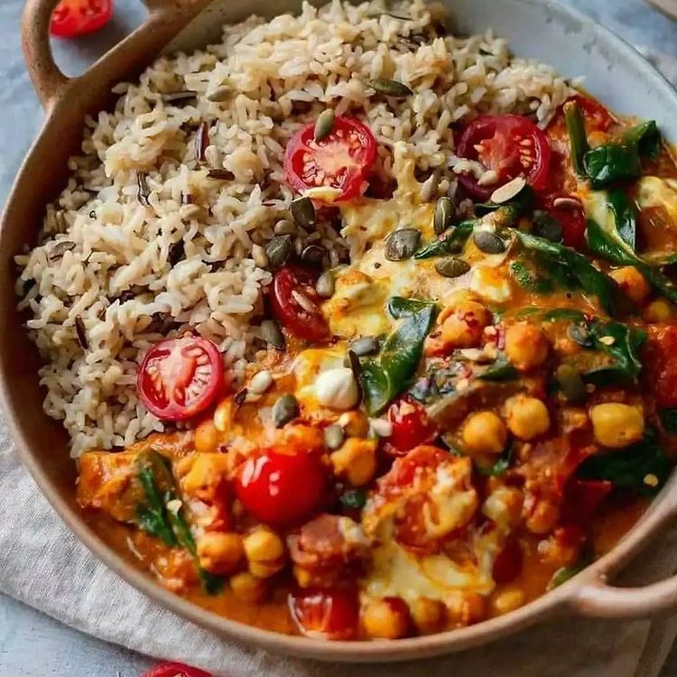

Vegan Chana Masala

Vegan Chana Masala in a bowl.
Description
I found this dish online and think it looks extremely appetizing. This dish looks delicious enough for even the most meat friendly person to give it a chance.
I personally am not someone that strays far from my chicken and rice, but I find this dish to be too difficult to resist.
Ingredients
- 2 400g tins of chickpeas.
- 2 400g tins of tomatoes.
- 3 Garlic cloves minced.
- 1 medium heat red chili.
- 1 thumb sized piece of ginger. (1/2 grated, and 1/2 finely chopped.)
- 800ml coconut milk
- 70g Fresh or frozen spinach.
- Handful of fresh tomatoes.
- 200 ml of water.
- 1 tsp cumin.
- 1 tsp garam masala.
- 1/4 tsp tumeric.
- 1/2 tsp sea salt flakes.
- 180g basmati rice.
Directions
This is where they go.